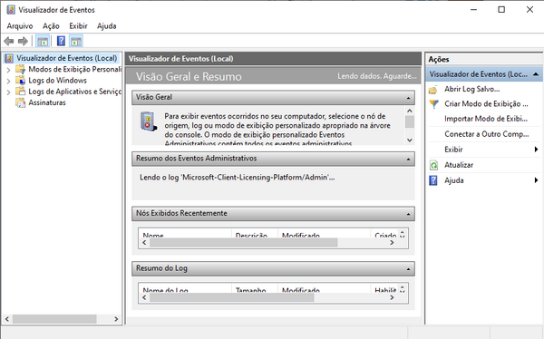

Como dito, todas as ações que tomamos no computador podem gerar alterações em registros do Windows, algumas delas geram logs, que são relatórios sobre algo que aconteceu no computador, estes logs podem nos ajudar a diagnosticar um problema ou uma falha. Por exemplo, caso o computador sofra um desligamento inesperado (abrupto) isso gerará um log de erro. No Log de Eventos, temos acesso a Logs de Informação, que transmitem detalhes sobre algo que aconteceu, Logs de Aviso, que visam transmitir informações importantes, e Logs de Erro, que visam alertar para falhas críticas no sistema.
Para acessar o Log de Eventos do Windows, clique em Iniciar → Ferramentas Adimistrativas → Visualizador de Eventos.
Você pode ainda abrir o Visualizador de Eventos pressionando ⊞+R e digitando: eventvwr.msc